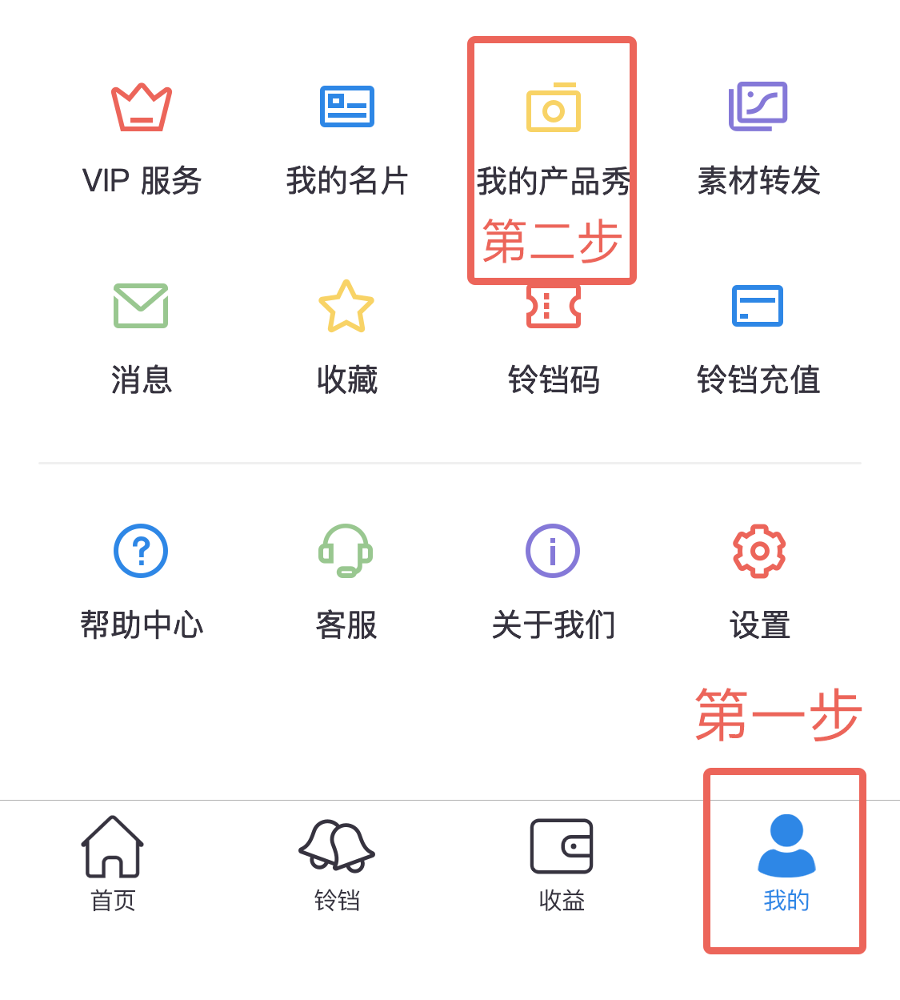

自动/手动刷新
该功能适用于自动/手动刷新：产品秀、个人名片、群名片
自动/手动刷新产品秀
1、【我的】-【我的产品秀】

2、进入我的我的产品秀列表，每条产品秀下边有操作按钮图标，点击自动刷新按钮图标： 开启自动刷新
3、选择刷新模式
- 普通模式：按照时间刷新，10铃铛/小时
- 高级模式：按照次数刷新，10铃铛/100次
4、支付铃铛，自动刷新成功
5、点击产品秀条目，进入该条产品秀详情，点击手动刷新按钮图标： 手动刷新

自动/手动刷新个人名片
1、【我的】-【我的名片】页面，顶部 Tab 选择：“个人名片”

2、进入个人名片列表，每条名片下边有操作按钮图标，点击自动刷新按钮图标： 开启自动刷新
3、选择刷新模式
- 普通模式：按照时间刷新，10铃铛/小时
- 高级模式：按照次数刷新，10铃铛/100次
4、支付铃铛，自动刷新成功
5、点击名片，进入名片详情，点击手动刷新按钮图标： 手动刷新
自动/手动刷新群名片
1、【我的】-【我的名片】页面，顶部 Tab 选择：“群名片”
2、进入群名片列表，每条名片下边有操作按钮图标，点击自动刷新按钮图标： 开启自动刷新
3、选择刷新模式
- 普通模式：按照时间刷新，10铃铛/小时
- 高级模式：按照次数刷新，10铃铛/100次
4、支付铃铛，自动刷新成功
5、点击名片条目，进入该条名片详情，点击手动刷新按钮图标： 手动刷新